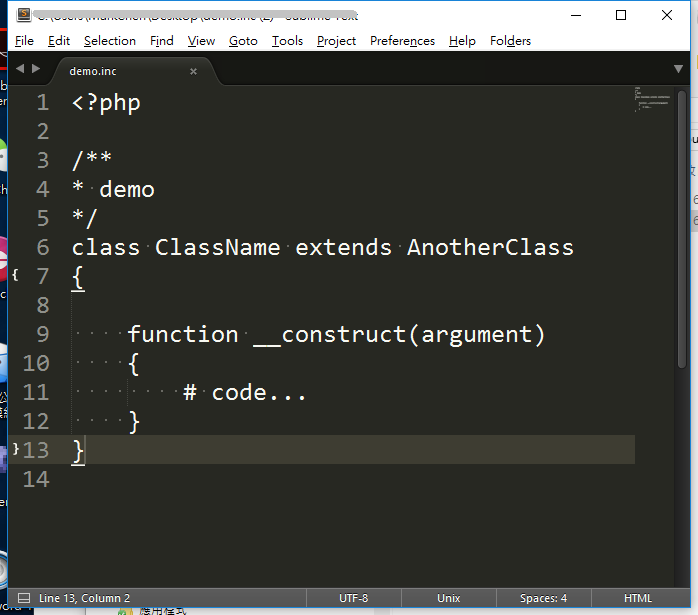
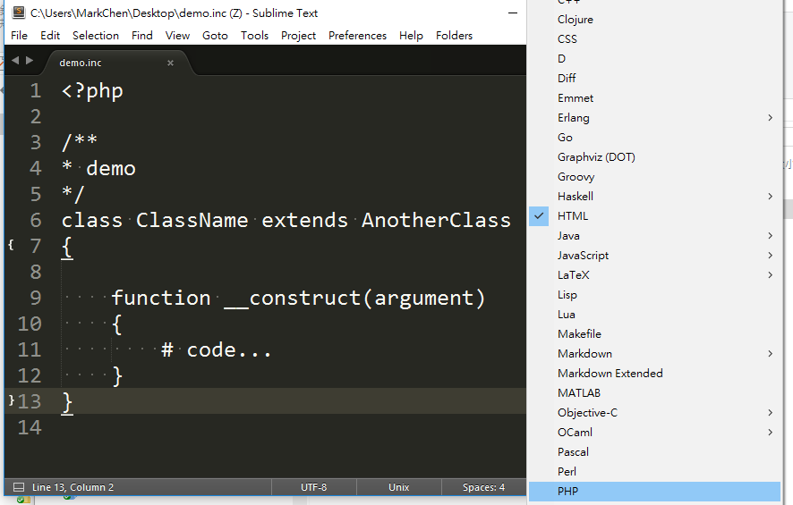
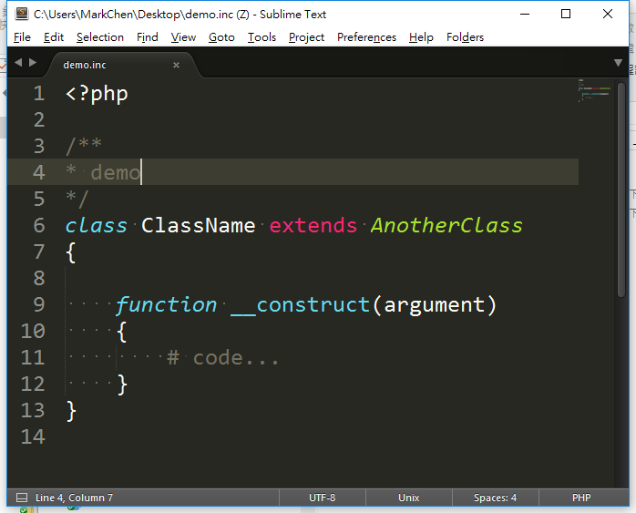
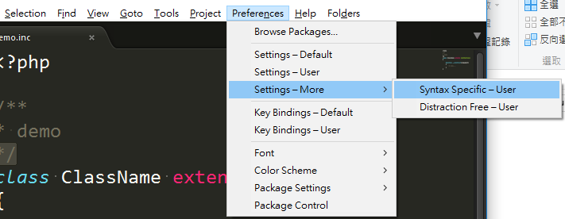
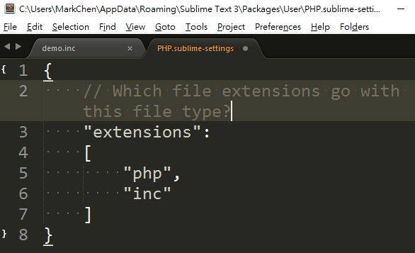

Sublime：針對特定副檔名設定預設樣式( Syntax ) Highlight
這陣子因為在修改舊版 php 程式，有些程式的副檔名並不是以 .php 命名，是以 .inc 之類的形式存在，因此以 Sublime 開啟的時候，會以預設的樣式( Syntax )，開始而不是 PHP 的樣式。而這篇內容就是記錄怎麼在 Sublime 下設定特定的副檔名文件，以呈現所設定的樣式呈現。
1. 開啟無法預設樣式的檔案
以下圖來說，由於該 php 程式副檔名為 inc ，因此在開啟時並無法被判斷為 PHP 程式，導致呈現黯淡無光的狀態，沒有套用到預設的 syntex。

2. 手動設定樣式
在 menu -> View -> Syntax -> 選擇設定要的語言，或在畫面右下角直接選擇 Syntax 。

設定完成後，即可顯示正確的顏色。

3. 設定使該副檔名未來皆以相同 Syntax 顯示
在目前已經手動設定好樣式的狀態下，選擇：
- Windows: Prefences > Setting-More > Syntax Specific - User
- OSX: Sublime Text > Prefences > Setting-More > Syntax Specific - User

可以發現出現一個新的檔案，以目前的 Syntax 設定為 PHP 為例，目前的檔名為 PHP.sublime-settings 為空白內容。這時候只要加上如下的內容，並存檔後即可。之後只要開啟副檔名為 php 或 inc 的文件，就都會以 PHP 的這個 Syntax 顯示。

1 | { |
4. 附註：
如果之後有需要修改，或增加也可以再次開啟。其路徑置放於：
- Windows: C:\Users{User Name}\AppData\Roaming\Sublime Text 3\Packages\User\
- MAC OSX: ~/Library/Application Support/Sublime Text 3/Packages/User
只要找到對應要修改的 Syntax 即可。